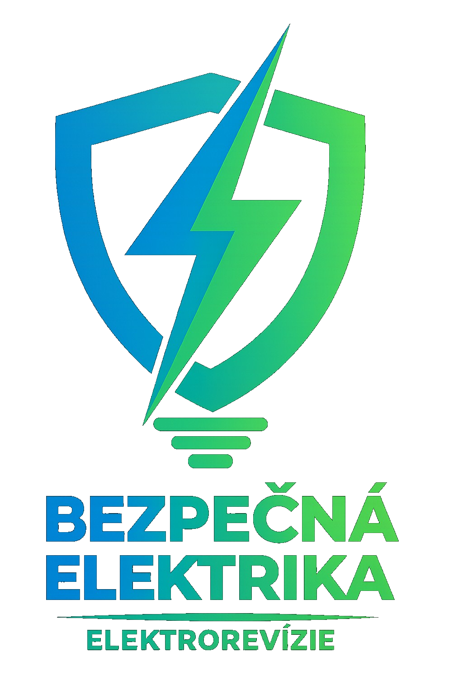

bezpecnaelektrika.sk
https://www.bezpecnaelektrika.sk
Pripravovaný profil

Projekt zameraný na elektrorevízie a budúce odborné služby v oblasti bezpečnosti elektrických zariadení.
Táto samostatná stránka je pripravená pre budúce rozšírenie. Profil predstavuje smerovanie služby Bezpečná elektrika, v rámci ktorej sa venujem elektrorevíziám a odbornej technickej praxi v oblasti elektrických zariadení.
Úspešne som absolvoval kurz revízneho technika VTZ E2A. Samostatná podnikateľská činnosť je zatiaľ vo fáze prípravy, no obsah a štruktúra stránky sú už pripravené na neskoršie spustenie.
Stránka je pripravená dopredu, ale zatiaľ nie je prepojená z hlavnej navigácie.
O profile
Budúca stránka Bezpečná elektrika bude primárne určená pre elektrorevízie domov, bytov a ďalších objektov. Zároveň môže byť neskôr rozšírená aj o ďalšie odborné služby podľa budúceho zamerania.
Domény
Pre projekt sú pripravené tieto domény. Momentálne ešte nemusia byť aktívne, no budú slúžiť ako základ budúceho webu.
https://www.bezpecnaelektrika.sk
https://www.bezpecna-elektrika.sk
Zameranie
Revízie a odborné posúdenie elektrických inštalácií a zariadení.
Obsah webu je pripravený tak, aby sa po spustení dala služba rýchlo aktivovať.
Projekt je otvorený aj ďalšiemu odbornému smerovaniu mimo samotných revízií.